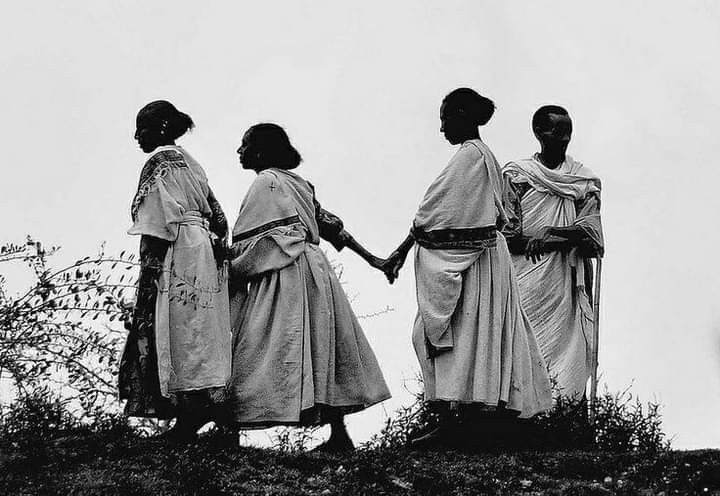
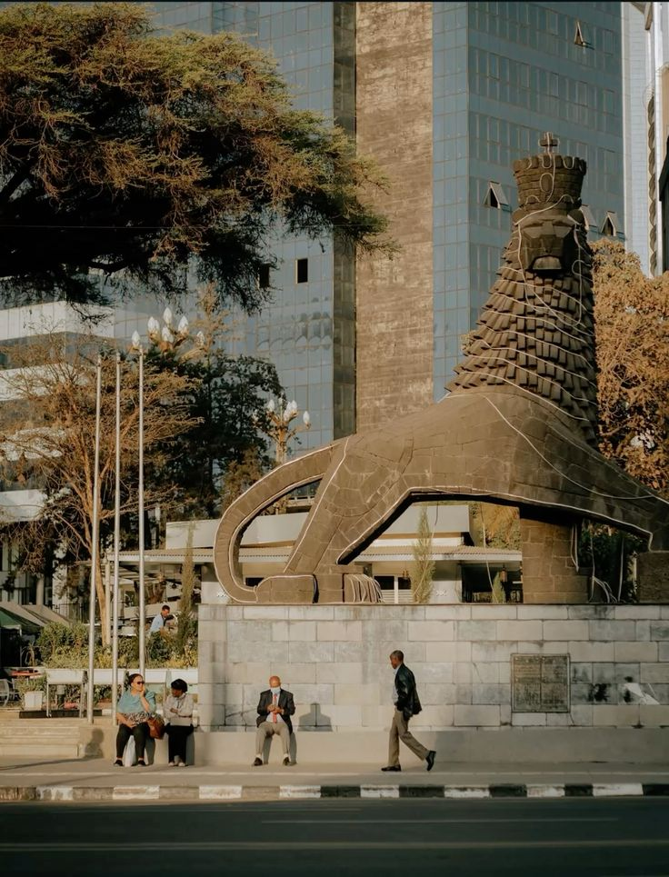
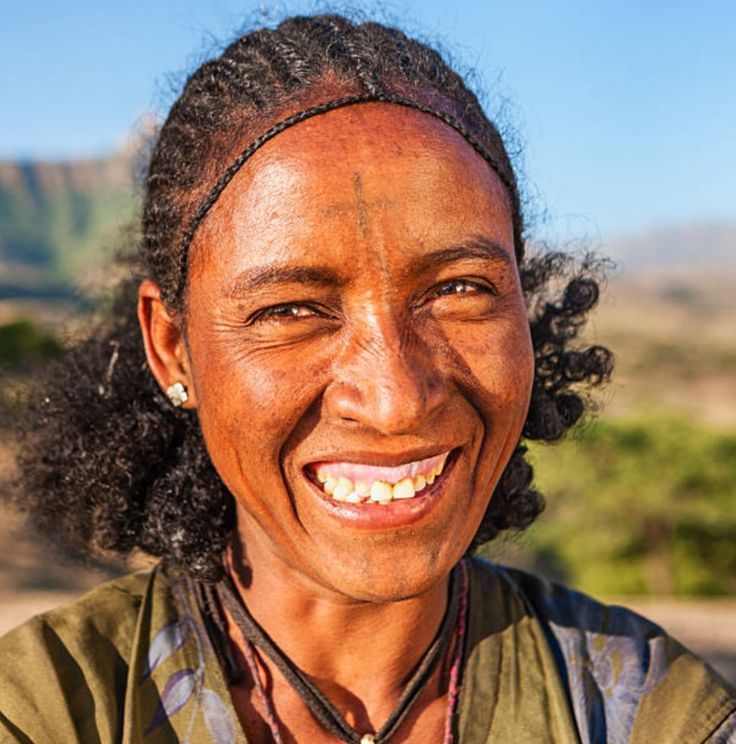
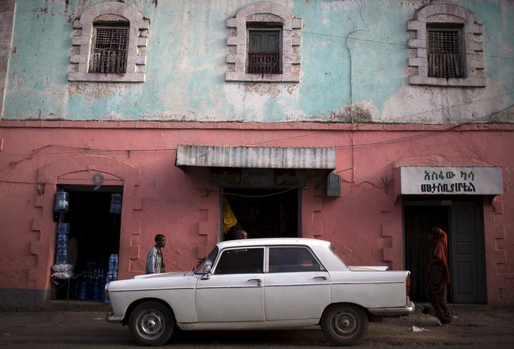
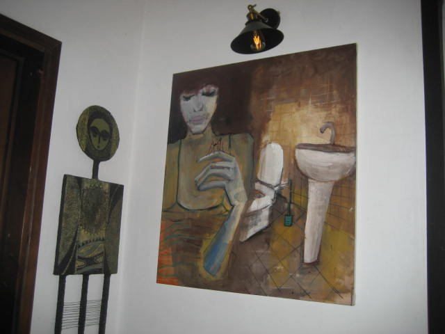
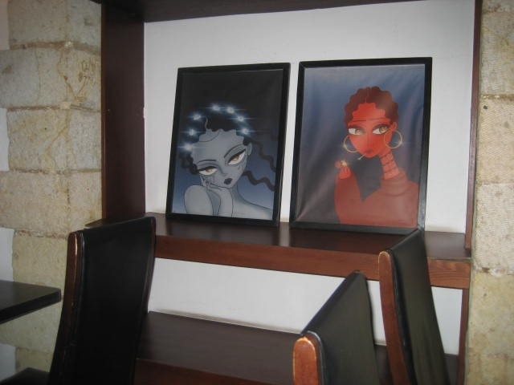
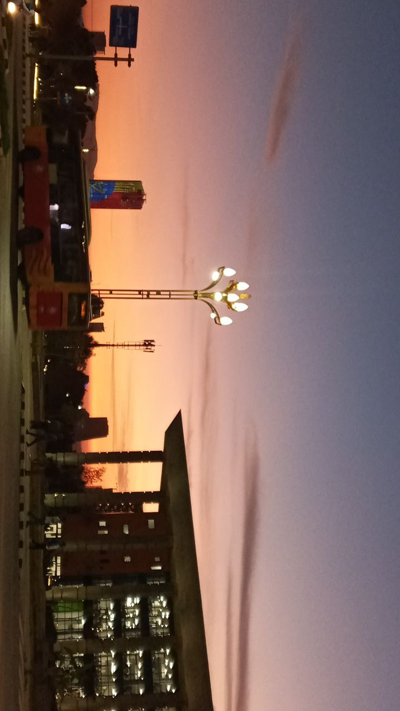

LIGHT & SHADOW
HIGHLAND SILHOUETTE
Silver light lingering on handwoven threads, bound softly in the quiet grace of intertwined hands.

Silver light lingering on handwoven threads, bound softly in the quiet grace of intertwined hands.

Beneath its watchful gaze, city life unfolds with quiet grace, seamlessly bridging Ethiopia’s rich past with the rhythm of the present.

protrait of a women from Lalibel,wello Amhara.

ETHIOPIA'S COLOUR FULL BUILDING.

quiet contemplation, and the beauty of daily personal routines.

Rich earthy red tones and bold stylized features add an inviting, cozy energy to the corner.

I snapped this view while taking a stroll near home, watching the horizon glow against the urban rhythm. It serves as a soulful reminder that no matter how fast the world moves around us, the beauty above invites us to slow down and just be.